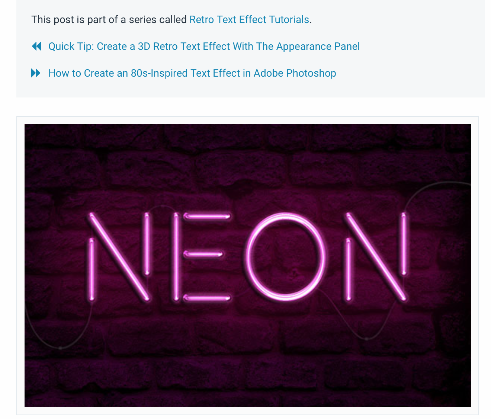
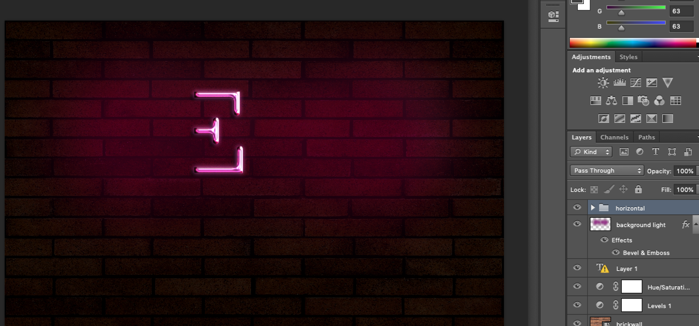
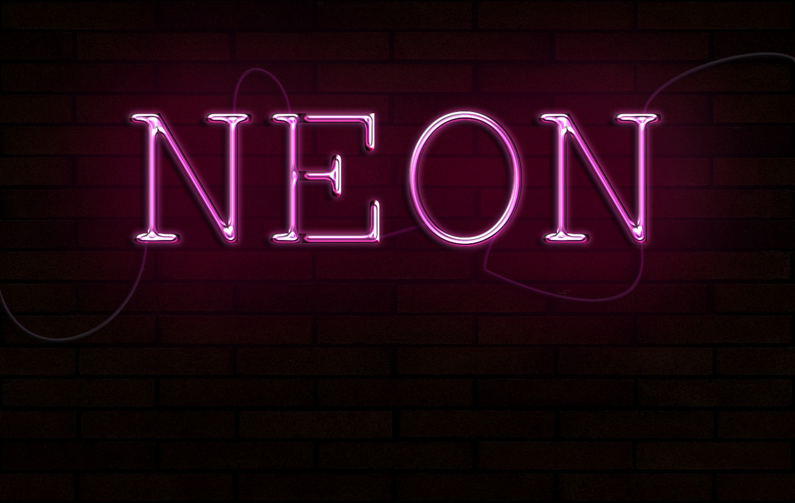
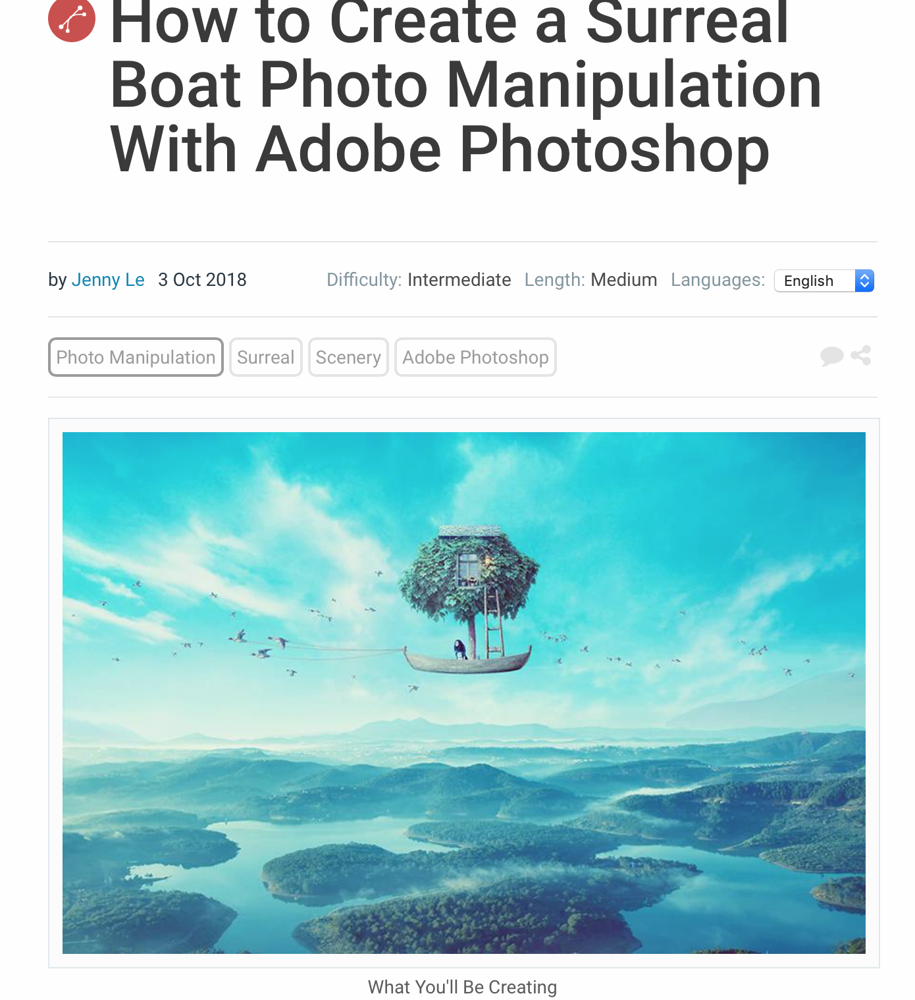
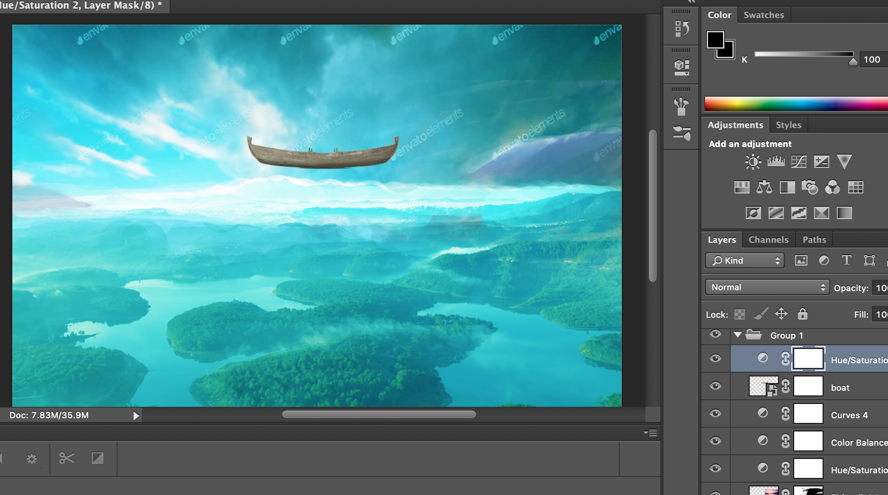
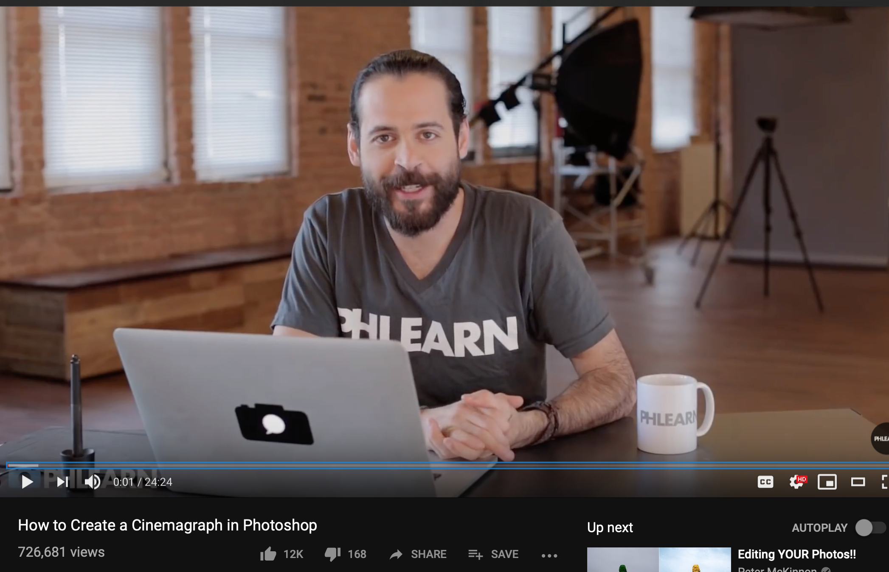
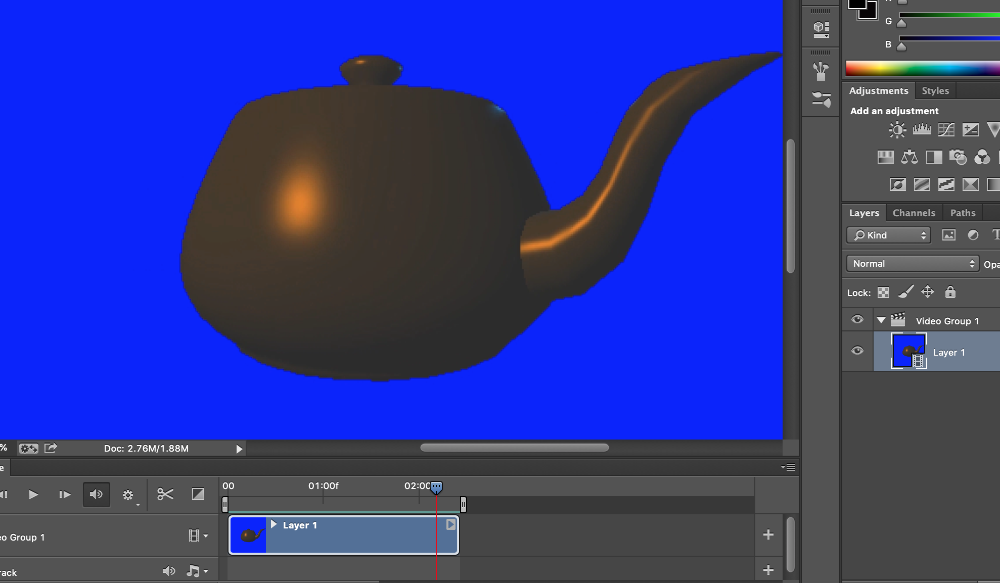
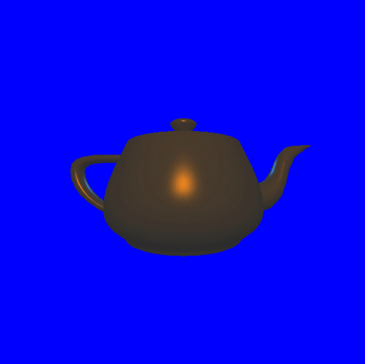

Category A - Tutorial

Simulating an image of a colored light against a brick wall. Downloaded the wall image, change its color to darken the background. Place the word "NEON" on top of the wall and then change its color to show a glowing effect.
Category A - Work In-Progress

I selected this tutorial partly because it looked pretty interesting and partly because it just happened to be the one I clicked on
Category A - Final Image

I learned how to use various layers in Photoshop and the skills needed to combine the layers to get them to work together and create an interesting effect. For example, the colored light uses 3 separate layers in order to simulate the effect of its glow
Category B - Tutorial

Creating a surreal boat photo manipulation using 12 images and combining them together with multiple adjustment layers.
Category B - Work In-Progress

I found that this seemed to be one of the easier tutorials and one of the shorter ones, so I chose this one. I also found the image to be quite interesting looking, so that was also my other motivation for doing this tutorial
Category C - Final

I learned how work with A LOT, and I mean a lot, of adjustment layers, how to mask layers, blending layers, modifying various color attributes like hue and saturation, working with images in groups, and the importance of ordering the images
Category C - Tutorial

Recorded a video of my homework assignment for CSE 167 (which was to create a rotate-able 3D model of a tea cup) and then transformed the video into an infinite loop gif
Category C - Work In-Progress

This was the only tutorial available (or at least the one provided), so there wasn't really any specific reason for choosing this tutorial.
Category C - Final

I learned how to create an infinite loop gif and the nuances in its creation and the importance of having steady camera in order to create a loop (hence the use of screen recording to make recording the video easier)